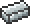

Silver Bow
| Silver Bow | |
|---|---|
| Statistics | |
| Type | Weapon |
| Damage | 9 |
| Knockback | knockback of the arrow used |
| Max stack | 1 |
| Shoot speed | 6.6 |
| Use time | 26 (Average) |
| Sell | 7 |
Crafting
Recipes
| Crafting Station | ||
|---|---|---|
| Ingredient(s) | Amount | |
|  | Silver Bar | 7 |
| Result | ||
| Silver Bow | 1 | |
History
- Pre-Release: Introduced.
| Bows and Repeaters |
|---|
| Wooden Bow Copper Bow Iron Bow Silver Bow Gold Bow Demon Bow Molten Fury Cobalt Repeater Mythril Repeater Adamantite Repeater Hallowed Repeater |
| Silver |
|---|
| Silver Ore Silver Bar Silver Brick Silver Brick Wall Silver Chandelier Silver Pickaxe Silver Axe Silver Hammer Silver Broadsword Silver Shortsword Silver Bow Silver armor Silver Watch Depth Meter |